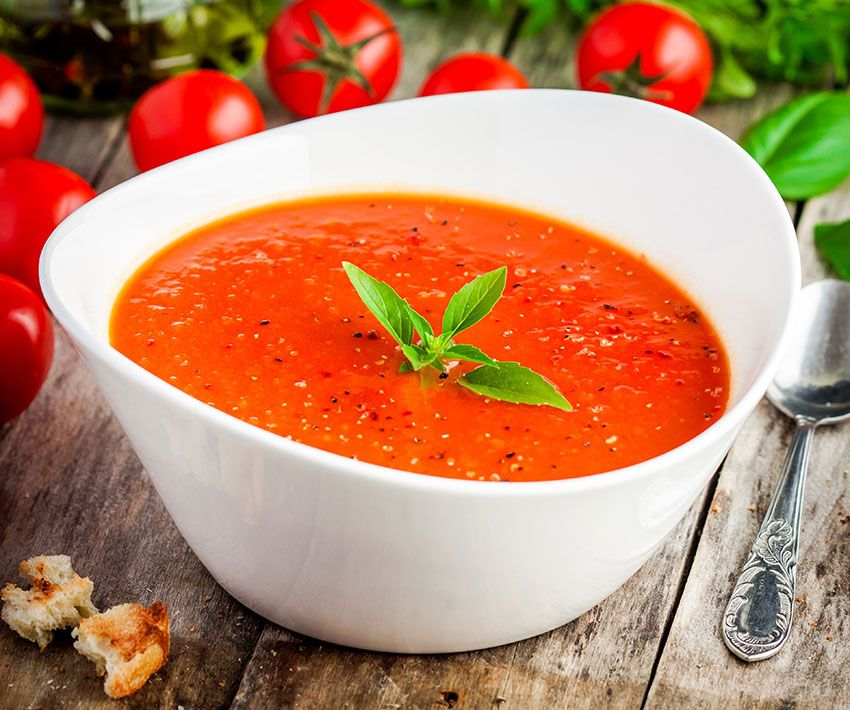

Gaspacho

Ingrédients (4 personnes)
Légumes
- 1 kg de tomates
- 1 concombre
- 1 poivron
- 1 oignon
- 1 gousse d’ail
- 180 g de pain rassis
Assaisonnement
- 12 g de vinaigre de Xérès
- 30 g d’huile d’olive
- 10 g de sel fin
- 2 g de poivre
Étapes
Préparation de la soupe
- Lavez les légumes.
- Épluchez et taillez le concombre en cubes grossiers. Faites-le dégorger avec du gros sel pendant 1 heure.
- Brûlez le poivron et la tomate à la flamme, puis épluchez-les. Épépinez le poivron et taillez-le en gros morceaux.
- Épluchez et taillez l’oignon en huit.
- Égouttez le concombre.
- Faites mijoter tous les ingrédients dans une casserole pendant une nuit.
- Le lendemain, assaisonnez et mixez avec le pain rassis. Assaisonnez de nouveau.
Dressage
- Juste avant de servir, ajoutez un filet d’huile d’olive et des feuilles de basilic en guise de décoration.
- Pour une version plus liquide, ajoutez des croûtons de pain.